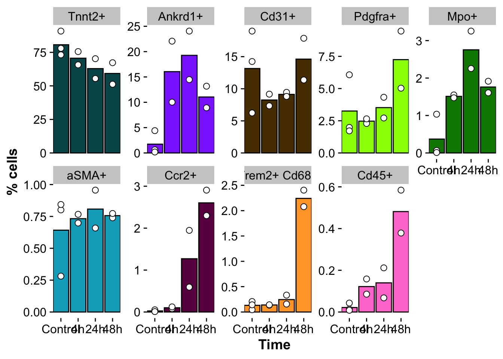

Last updated: 2024-03-21
Checks: 7 0
Knit directory: mi_spatialomics/
This reproducible R Markdown analysis was created with workflowr (version 1.7.1). The Checks tab describes the reproducibility checks that were applied when the results were created. The Past versions tab lists the development history.
Great! Since the R Markdown file has been committed to the Git repository, you know the exact version of the code that produced these results.
Great job! The global environment was empty. Objects defined in the global environment can affect the analysis in your R Markdown file in unknown ways. For reproduciblity it’s best to always run the code in an empty environment.
The command set.seed(20230612) was run prior to running
the code in the R Markdown file. Setting a seed ensures that any results
that rely on randomness, e.g. subsampling or permutations, are
reproducible.
Great job! Recording the operating system, R version, and package versions is critical for reproducibility.
Nice! There were no cached chunks for this analysis, so you can be confident that you successfully produced the results during this run.
Great job! Using relative paths to the files within your workflowr project makes it easier to run your code on other machines.
Great! You are using Git for version control. Tracking code development and connecting the code version to the results is critical for reproducibility.
The results in this page were generated with repository version e6213a5. See the Past versions tab to see a history of the changes made to the R Markdown and HTML files.
Note that you need to be careful to ensure that all relevant files for
the analysis have been committed to Git prior to generating the results
(you can use wflow_publish or
wflow_git_commit). workflowr only checks the R Markdown
file, but you know if there are other scripts or data files that it
depends on. Below is the status of the Git repository when the results
were generated:
Ignored files:
Ignored: .DS_Store
Ignored: .Rproj.user/
Ignored: analysis/.DS_Store
Ignored: analysis/deprecated/.DS_Store
Ignored: analysis/molecular_cartography_python/.DS_Store
Ignored: analysis/seqIF_python/.DS_Store
Ignored: analysis/seqIF_python/pixie/.DS_Store
Ignored: analysis/seqIF_python/pixie/cell_clustering/
Ignored: annotations/.DS_Store
Ignored: annotations/SeqIF/.DS_Store
Ignored: annotations/molkart/.DS_Store
Ignored: annotations/molkart/Figure1_regions/.DS_Store
Ignored: annotations/molkart/Supplementary_Figure4_regions/.DS_Store
Ignored: data/.DS_Store
Ignored: data/140623.calcagno_et_al.seurat_object.rds
Ignored: data/Calcagno2022_int_logNorm_annot.h5Seurat
Ignored: data/IC_03_IF_CCR2_CD68 cell numbers.xlsx
Ignored: data/Traditional_IF_absolute_cell_counts.csv
Ignored: data/Traditional_IF_relative_cell_counts.csv
Ignored: data/pixie.cell_table_size_normalized_cell_labels.csv
Ignored: data/results_cts_100.sqm
Ignored: data/seqIF_regions_annotations/
Ignored: data/seurat/
Ignored: output/.DS_Store
Ignored: output/mol_cart.harmony_object.h5Seurat
Ignored: output/molkart/
Ignored: output/proteomics/
Ignored: output/results_cts.lowres.125.sqm
Ignored: output/seqIF/
Ignored: pipeline_configs/.DS_Store
Ignored: plots/
Ignored: references/.DS_Store
Ignored: renv/.DS_Store
Ignored: renv/library/
Ignored: renv/staging/
Untracked files:
Untracked: analysis/deprecated/figures.supplementary_figureX.Rmd
Untracked: analysis/deprecated/figures.supplementary_figure_X.MistyR.Rmd
Unstaged changes:
Deleted: analysis/figures.supplementary_figureX.Rmd
Deleted: analysis/figures.supplementary_figure_X.MistyR.Rmd
Deleted: analysis/figures.supplementary_figure_X.proteomics_qc.Rmd
Deleted: figures/Figure_5.eps
Deleted: figures/Figure_5.pdf
Deleted: figures/Figure_5.png
Deleted: figures/Figure_5.svg
Deleted: figures/Supplementary_Figure_1_Molecular_Cartography_ROIs.png
Deleted: figures/Supplementary_figure_5.segmentation_metrics.poster.eps
Modified: figures/Supplementary_figure_X.proteomics.eps
Modified: figures/Supplementary_figure_X.proteomics.png
Deleted: results_cts.lowres.125.sqm
Note that any generated files, e.g. HTML, png, CSS, etc., are not included in this status report because it is ok for generated content to have uncommitted changes.
These are the previous versions of the repository in which changes were
made to the R Markdown
(analysis/figures.supplementary_figure6.pixie.Rmd) and HTML
(docs/figures.supplementary_figure6.pixie.html) files. If
you’ve configured a remote Git repository (see
?wflow_git_remote), click on the hyperlinks in the table
below to view the files as they were in that past version.
| File | Version | Author | Date | Message |
|---|---|---|---|---|
| Rmd | e6213a5 | FloWuenne | 2024-03-21 | Publish all updated files. |
| Rmd | 56559c7 | FloWuenne | 2024-03-21 | Cleaned up repository. |
| Rmd | 21b927e | FloWuenne | 2024-03-17 | Updates supplementary figure code. |
| Rmd | a49803c | FloWuenne | 2024-02-29 | Updated a number of figures. |
library(pheatmap)
library(data.table)
library(viridis)Loading required package: viridisLitelibrary(RColorBrewer)
library(tidyverse)── Attaching core tidyverse packages ──────────────────────── tidyverse 2.0.0 ──
✔ dplyr 1.1.4 ✔ readr 2.1.5
✔ forcats 1.0.0 ✔ stringr 1.5.1
✔ ggplot2 3.4.4 ✔ tibble 3.2.1
✔ lubridate 1.9.3 ✔ tidyr 1.3.0
✔ purrr 1.0.2 ── Conflicts ────────────────────────────────────────── tidyverse_conflicts() ──
✖ dplyr::between() masks data.table::between()
✖ dplyr::filter() masks stats::filter()
✖ dplyr::first() masks data.table::first()
✖ lubridate::hour() masks data.table::hour()
✖ lubridate::isoweek() masks data.table::isoweek()
✖ dplyr::lag() masks stats::lag()
✖ dplyr::last() masks data.table::last()
✖ lubridate::mday() masks data.table::mday()
✖ lubridate::minute() masks data.table::minute()
✖ lubridate::month() masks data.table::month()
✖ lubridate::quarter() masks data.table::quarter()
✖ lubridate::second() masks data.table::second()
✖ purrr::transpose() masks data.table::transpose()
✖ lubridate::wday() masks data.table::wday()
✖ lubridate::week() masks data.table::week()
✖ lubridate::yday() masks data.table::yday()
✖ lubridate::year() masks data.table::year()
ℹ Use the conflicted package (<http://conflicted.r-lib.org/>) to force all conflicts to become errorslibrary(pals)
Attaching package: 'pals'
The following objects are masked from 'package:viridis':
cividis, inferno, magma, plasma, turbo, viridis
The following objects are masked from 'package:viridisLite':
cividis, inferno, magma, plasma, turbo, viridislibrary(vroom)
Attaching package: 'vroom'
The following objects are masked from 'package:readr':
as.col_spec, col_character, col_date, col_datetime, col_double,
col_factor, col_guess, col_integer, col_logical, col_number,
col_skip, col_time, cols, cols_condense, cols_only, date_names,
date_names_lang, date_names_langs, default_locale, fwf_cols,
fwf_empty, fwf_positions, fwf_widths, locale, output_column,
problems, speclibrary(plotly)
Attaching package: 'plotly'
The following object is masked from 'package:ggplot2':
last_plot
The following object is masked from 'package:stats':
filter
The following object is masked from 'package:graphics':
layoutpixel_map_color <- c("#8c3bff", "#018700", "#00acc6", "#97ff00",
"#ff7ed1", "#6b004f", "#ffa52f", "#573b00", "#005659","#ffffff")
names(pixel_map_color) <- c("Ankrd1+", "Mpo+", "aSMA+", "Pdgfra+", "Cd45+", "Ccr2+", "Trem2+ Cd68+", "Cd31+", "Tnnt2+","background")
source("./code/functions.R")
Attaching package: 'cowplot'
The following object is masked from 'package:lubridate':
stamp
here() starts at /Users/florian_wuennemann/1_Projects/MI_project/mi_spatialomicspixel_heat <- fread("../data/SeqIF/pixie_pixel_masks_0.05/pixel_channel_avg_meta_cluster.csv")
pixel_heat pixel_meta_cluster ANKRD1 aSMA CCR2 CD31 CD45
1: 1 0.6564672 0.02853554 0.16578453 0.2343214 0.12020333
2: 2 0.2760541 0.02163947 0.16486345 0.1195075 0.31608038
3: 5 0.1751630 0.67531316 0.08870606 0.3571941 0.09310648
4: 8 0.2524684 0.04044455 0.09697171 0.1752383 0.09049972
5: 11 0.2810251 0.03931616 0.29839863 0.2179582 1.37854076
6: 12 0.2042928 0.02445315 0.98214607 0.1210940 0.39986051
7: 17 0.2493411 0.02978874 0.23478253 0.1286853 0.26765573
8: 18 0.1980813 0.03114820 0.11136213 0.5636297 0.07064971
9: 20 0.3814408 0.03187345 0.10676994 0.1285132 0.10595270
10: 23 0.3647658 0.04919484 0.34145857 0.2864004 0.22677640
CD68 MPO PDGFRa TNNT2 TREM2 count
1: 0.02963032 0.14417472 0.05818441 0.3331969 0.07812194 307505563
2: 0.07763542 0.93435865 0.07390264 0.2107106 0.11017212 26537966
3: 0.02850467 0.07914696 0.11918324 0.2620314 0.05507709 20357034
4: 0.04440526 0.10189771 0.50140056 0.3540510 0.07616204 127310325
5: 0.12912089 0.26835699 0.12163833 0.2498097 0.16524068 4581183
6: 0.23309418 0.21003429 0.16730817 0.1769699 0.39281374 20030320
7: 0.75303281 0.12003899 0.12104188 0.2046672 1.06433816 26214802
8: 0.02691090 0.07606489 0.06639025 0.3491986 0.05912748 330116307
9: 0.02739381 0.06758424 0.04609704 0.6888311 0.04905438 1938275265
10: 0.06095365 0.17504628 0.10001979 0.3157357 0.12774674 142733133
pixel_meta_cluster_rename
1: Ankrd1+
2: Mpo+
3: aSMA+
4: Pdgfra+
5: Cd45+
6: Ccr2+
7: Trem2_Cd68+
8: Cd31+
9: Tnnt2+
10: backgroundpixel_heat <- pixel_heat %>%
subset(pixel_meta_cluster_rename != "background")mat_rownames <- pixel_heat$pixel_meta_cluster_rename
mat_rownames <- gsub("_","+ ",mat_rownames)
mat_rownames <- paste(mat_rownames,"pixels", sep = " ")
mat_dat <- pixel_heat %>%
dplyr::select(-c(pixel_meta_cluster,count,pixel_meta_cluster_rename))cap = 3 #hierarchical clustering cap
hclust_coln = "pixel_meta_cluster_rename"
rwb_cols = colorRampPalette(c("royalblue4","white","red4"))(99)
mat_dat = scale(mat_dat)
mat_dat = pmin(mat_dat, cap)
rownames(mat_dat) <- mat_rownames
# Determine breaks
range = max(abs(mat_dat))
breaks = seq(-range, range, length.out=100)
mat_col = data.frame(pixel_cluster = as.factor(mat_rownames))
rownames(mat_col) <- mat_rownames
mat_colors = pixel_map_color[1:length(mat_rownames)]
names(mat_colors) = mat_rownames
mat_colors = list(pixel_cluster = mat_colors)
# Make heatmap
pheatmap(mat_dat,
color = rwb_cols,
border_color = "black",
breaks = breaks,
cluster_rows = TRUE,
cluster_cols = TRUE,
treeheight_col = 25,
treeheight_row = 25,
#treeheight_col = 0,
show_rownames = TRUE,
annotation_row = mat_col,
annotation_colors = mat_colors,
annotation_names_row = FALSE,
annotation_legend = FALSE,
legend = TRUE,
#legend_breaks = c(-3,-2,-1,0,1,2,3),
#legend_labels = c("-3","-2","-1","0","1","2","3"),
main = "",
filename = "./output/seqIF/supplementary_figure_6.pixie_pixel_cluster_heatmap.pdf",
fontsize = 20,
width = 8,
height = 6)## read in pixel cluster counts
pixel_counts = fread("../data/SeqIF/pixie_pixel_masks_0.05/pixel_counts.all_samples.csv")
pixel_counts <- pixel_counts %>%
mutate("Pixel_cluster" = if_else(Pixel_cluster %in% c("Cd68+","Trem2+"),"Trem2+ Cd68+",Pixel_cluster)) %>%
subset(!Pixel_cluster %in% c("Cd68+","Trem2+"))
pixel_cluster_counts_stats <- pixel_counts %>%
subset(Pixel_cluster != "background") %>%
separate("Sample_ID", into = c("time","sample")) %>%
group_by(sample,time,Pixel_cluster) %>%
summarise("n_pixel" = sum(Count)) %>%
mutate("percent" = n_pixel / sum(n_pixel)) %>%
ungroup()`summarise()` has grouped output by 'sample', 'time'. You can override using
the `.groups` argument.pixel_cluster_counts_stats$time <-factor(pixel_cluster_counts_stats$time,
levels = c("Control","4h","24h","48h"))
pixel_cluster_counts_stats$Pixel_cluster <- factor(pixel_cluster_counts_stats$Pixel_cluster,
levels = c("Tnnt2+", "Ankrd1+","Cd31+","Pdgfra+", "Mpo+","aSMA+", "Ccr2+","Trem2+ Cd68+","Cd45+"))pixel_number_distribution <- ggplot(pixel_cluster_counts_stats,
aes(x=time, y=percent * 100)) +
# geom_bar(stat = "identity", position = "stack", aes(fill = Pixel_cluster), color = "black") +
geom_bar(position='dodge', stat='summary', fun='mean', color = "black",
aes(fill = Pixel_cluster)) +
# Add points for each fill group on top of bars
geom_point(aes(group=Pixel_cluster), size=2.5, shape=21, fill="white", color="black") +
theme(legend.position = "none",
axis.line = element_blank()) +
scale_fill_manual(values = pixel_map_color) +
scale_x_discrete(expand = c(0,0.1),
name ="Time",
limits=c("Control","4h","24h","48h")) +
labs(y = "% cells") +
facet_wrap(~ Pixel_cluster, scales = "free_y", nrow = 2)
pixel_number_distribution
save_plot(pixel_number_distribution,
file = "./output/seqIF/supplementary_figure_6.pixie_clusters_overtime.pdf",
base_height = 4,
base_asp = 2.5)
sessionInfo()R version 4.3.1 (2023-06-16)
Platform: aarch64-apple-darwin20 (64-bit)
Running under: macOS Sonoma 14.1.2
Matrix products: default
BLAS: /Library/Frameworks/R.framework/Versions/4.3-arm64/Resources/lib/libRblas.0.dylib
LAPACK: /Library/Frameworks/R.framework/Versions/4.3-arm64/Resources/lib/libRlapack.dylib; LAPACK version 3.11.0
locale:
[1] en_US.UTF-8/en_US.UTF-8/en_US.UTF-8/C/en_US.UTF-8/en_US.UTF-8
time zone: Europe/Berlin
tzcode source: internal
attached base packages:
[1] stats graphics grDevices datasets utils methods base
other attached packages:
[1] here_1.0.1 ggsci_3.0.0 cowplot_1.1.2 plotly_4.10.4
[5] vroom_1.6.5 pals_1.8 lubridate_1.9.3 forcats_1.0.0
[9] stringr_1.5.1 dplyr_1.1.4 purrr_1.0.2 readr_2.1.5
[13] tidyr_1.3.0 tibble_3.2.1 ggplot2_3.4.4 tidyverse_2.0.0
[17] RColorBrewer_1.1-3 viridis_0.6.4 viridisLite_0.4.2 data.table_1.14.10
[21] pheatmap_1.0.12 workflowr_1.7.1
loaded via a namespace (and not attached):
[1] tidyselect_1.2.0 farver_2.1.1 fastmap_1.1.1
[4] lazyeval_0.2.2 promises_1.2.1 digest_0.6.34
[7] timechange_0.2.0 lifecycle_1.0.4 processx_3.8.3
[10] magrittr_2.0.3 compiler_4.3.1 rlang_1.1.3
[13] sass_0.4.8 tools_4.3.1 utf8_1.2.4
[16] yaml_2.3.8 knitr_1.45 labeling_0.4.3
[19] htmlwidgets_1.6.4 bit_4.0.5 mapproj_1.2.11
[22] withr_2.5.2 grid_4.3.1 fansi_1.0.6
[25] git2r_0.33.0 colorspace_2.1-0 scales_1.3.0
[28] dichromat_2.0-0.1 cli_3.6.2 rmarkdown_2.25
[31] crayon_1.5.2 ragg_1.2.7 generics_0.1.3
[34] rstudioapi_0.15.0 httr_1.4.7 tzdb_0.4.0
[37] cachem_1.0.8 maps_3.4.2 BiocManager_1.30.22
[40] vctrs_0.6.5 jsonlite_1.8.8 callr_3.7.3
[43] hms_1.1.3 bit64_4.0.5 systemfonts_1.0.5
[46] jquerylib_0.1.4 glue_1.7.0 ps_1.7.6
[49] stringi_1.8.3 gtable_0.3.4 later_1.3.2
[52] munsell_0.5.0 pillar_1.9.0 htmltools_0.5.7
[55] R6_2.5.1 textshaping_0.3.7 rprojroot_2.0.4
[58] evaluate_0.23 highr_0.10 renv_1.0.3
[61] httpuv_1.6.14 bslib_0.6.1 Rcpp_1.0.12
[64] gridExtra_2.3 whisker_0.4.1 xfun_0.41
[67] fs_1.6.3 getPass_0.2-4 pkgconfig_2.0.3